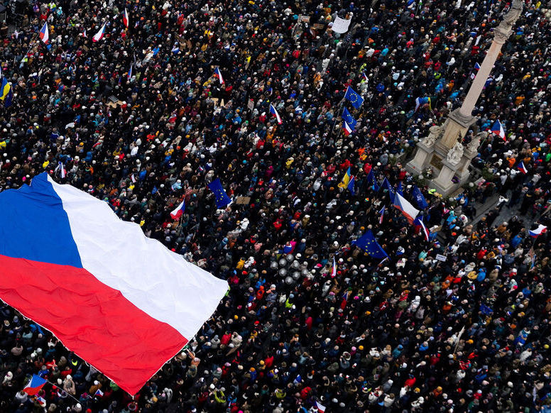

Le début d’année est mouvementé sur la scène politique tchèque, marquée par le conflit ouvert entre le Président Petr Pavel et son ministre des Affaires étrangères Petr Macinka. Entre manifestations à Prague et crise institutionnelle, en voilà le récit...

Le régime parlementaire tchèque
La République tchèque est un pays d’Europe centrale de 11 millions d’habitants indépendant depuis 1993 et la scission de la Tchécoslovaquie, ancienne république soviétique. La Tchéquie fonctionne dans un régime politique parlementaire : chaque nouveau gouvernement nommé par le Président doit obtenir un vote de confiance à la Chambre des députés pour pouvoir gouverner. Si la Chambre refuse de donner sa confiance, le gouvernement doit démissionner et le Président doit recommencer jusqu’à ce que la Chambre donne son accord (articles 68 et 73 de la Constitution). Il est donc plus facile pour le Président de nommer un gouvernement issu d’une majorité à la Chambre des députés pour que le gouvernement ressemble aux votes des citoyens.
Les élections législatives de 2017 donnent la majorité au parti ANO 2011 mené par le milliardaire Andrej Babiš, l’ex-ministre des Finances, qui devient chef du gouvernement face à 2 coalitions d’opposition (Ensemble et Pirates et maires). Après les élections de 2021, ces 2 groupes formeront le prochain gouvernement de centre-droit sous Petr Fiala (2021-2025). Andrej Babiš vise la présidence en 2023 mais perd dans le contexte de la guerre en Ukraine face à Petr Pavel, ex-général à la tête de l’armée tchèque puis président du comité militaire de l’OTAN. Les dernières élections législatives du 3-4 octobre 2025 donnent une majorité relative au parti ANO 2011 qui s’allie avec les 2 partis d’extrême-droite des Automobilistes et du SPD (Liberté et démocratie directe) pour créer une majorité absolue.
Des écarts idéologiques et politiques entre Pavel et Babiš
Le 27 octobre, Andrej Babiš est chargé de former un nouveau gouvernement par le président Petr Pavel. Après avoir proposé un gouvernement, Pavel termine le 8 décembre ses entretiens avec les candidats aux ministères, nomme Babiš président du gouvernement le 9 puis le reste du gouvernement le 15.
Le parti ANO 2011 de Babiš est un parti eurosceptique, populiste et « attrape-tout », s’adaptant au climat électoral et sans colonne vertébrale politique. Babiš est connu pour être moins virulent sur les sanctions contre la Russie et il a déjà bloqué les efforts européens de soutien à l’Ukraine en refusant de participer au prêt européen de 90 milliards pour l’Ukraine. Lors de l’investiture de Babiš puis de son gouvernement, Pavel a tenu à rappeler que la prospérité du pays dépend de l’UE et de l’OTAN, et avertit le nouveau gouvernement nationaliste : « En tant que l’un des garants de la Constitution, je regarderai attentivement comment le gouvernement respecte les principes d’un pays démocratique. »
Lors du traditionnel déjeuner du Nouvel An entre le Président et le Premier ministre, Pavel campe sur ses positions pro-occidentales et souligne la nécessité que « les déclarations publiques correspondent aux priorités claires de la politique étrangère de la République tchèque » que sont l’attachement aux structures de l’UE et de l’OTAN pour Pavel, mais un détachement à l’Europe sans alignement prorusse assumé pour Babiš. Le chef du parti SPD, allié de Babiš, voit l’immigration illégale de masse comme risque majeur pour la Tchéquie – la principale menace reste la Russie pour le Président.
Comment une formalité constitutionnelle fait débat dans l’exécutif et dans la presse
Quand Babiš présenta la candidature de Filip Turek au poste de ministre de l’Environnement, Pavel annonce que sa position reste « inchangée ». En effet, Turek est accusé de publications racistes, sexistes ou homophobes sur les réseaux sociaux, de sympathie avec le nazisme (photos à l’appui) et de violences domestiques. Au début candidat pour les Affaires étrangères, Pavel a préféré donner ce ministère à Petr Macinka, président du parti des Automobilistes. Babiš a proposé que Turek (président d’honneur du parti) soit nommé à l’Environnement mais c’est un nouvel échec.
Selon l’article 68 de la Constitution tchèque, « Le Président de la République nomme le président du gouvernement et, sur sa proposition, les autres membres du gouvernement […] ». Mais la Constitution ne permet pas explicitement et clairement que le Président puisse refuser une personne au poste de ministre, ce qui provoque la colère du parti, d’autant que les raisons de ce refus sont politiques et non juridiques.
Dans la nuit du 27 au 28 janvier, le ministre des Affaires étrangères Petr Macinka envoya des messages à un conseiller présidentiel, messages que Pavel décrit comme le chantage du ministre à vouloir faire la paix en Ukraine contre la nomination de Turek à l’Environnement. Dans ces messages, Macinka écrit que « M. le Président aura la paix [en Ukraine] si j’ai Turek à l’Environnement. […] Je suis pleinement déterminé, s’il ne cède pas, à prendre des mesures maximalistes jusque dans les moindres détails. [...] Je suis prêt à me battre contre Petr Pavel pour Turek avec une telle brutalité que cela deviendra un sujet important et durable. Sans scrupules. » Pavel décide de publier ces messages sur X et convoque une conférence de presse : il rappelle que ces messages sont inacceptables dans tout pays démocratique et qu’« aucune intimidation ne fonctionnera » sur lui, décrivant la tentative « extrêmement grave » du ministre d’influencer l’exercice de ses fonctions constitutionnelles.
Alors que le ministre et le président ont des opinions différentes en matière de politique étrangère, la nomination de Turek tend l’exécutif tchèque. En janvier déjà, le ministre a annulé la rotation de dizaines de nouveaux ambassadeurs tchèques, décision prise par le précédent gouvernement et déjà commencée par le président. Babiš veut apaiser les tensions car le conflit entre un ministre qu’il a proposé et le Président en capacité de le révoquer nuit aux relations qu’il a lui-même avec le Président, d’autant que les débats sur la cohérence de la politique étrangère sont toujours présents : le gouvernement refuse d’accéder à la demande de Pavel de donner 4 avions tchèques pour la défense ukrainienne. Babiš approuve la maladresse du ministre mais affirme comprendre sa colère. Il déclare ne pas vouloir d’une « guerre de tranchées » entre Pavel et son gouvernement, préférant des discussions privées que des échanges publics interposés.
Une résolution de crise contre toute attente
L’opposition se construit face au ministre : 100.000 manifestants ont soutenu Pavel à Prague le 1er février, et 600.000 personnes ont signé une pétition de soutien. L’ex-Premier ministre Petr Fiala, tout comme l’opposition politique à la Chambre des députés, réclame la démission du ministre – demande refusée par Babiš –, accuse le ministre de faire passer les intérêts du parti avant la sécurité nationale, et appelle à une unité pour coordonner la politique étrangère tchèque, une nécessité à la crédibilité du pays. De son côté, Macinka soutient que le refus de nommer Turek est contraire à la Constitution. Il continue à vouloir donner la responsabilité de représenter la République tchèque au Premier ministre plutôt qu’au Président au prochain sommet de l’OTAN en Turquie : l’article 63 de la Constitution dit bien que « Le président de la République représente l’Etat à l’étranger », d’autant que Pavel fut ancien dirigeant militaire de l’OTAN, il connait l’organisation et a de la crédibilité là-bas.
Le président Pavel a surpris le 23 février en nommant Igor Červený au ministère de l’Environnement, député membre du parti des Automobilistes. Toutefois, Turek est le nouveau chargé de la politique climatique au sein du gouvernement : il va donc travailler étroitement au ministère avec Červený.
Selon certains médias tchèques, le bureau du ministre est utilisé par Turek, alors que le ministre Červený travaillerait dans le bureau plus petit du chef du cabinet. Ce manquement au protocole est significatif de la ténacité de Turek. Selon lui, il forme un tandem avec Červený : « Nous ne cherchons pas à savoir qui détient les fonctions formelles ou informelles. » Le ministre de l’Environnement Petr Hladik (2023-2025) accuse Červený de ne pas réellement diriger son ministère, n’étant que le « remplaçant du remplaçant ».
Turek a déclaré avoir préparé une plainte pour atteinte à la personnalité contre le président Pavel, et s’est dit choqué par les raisons qui ont poussé Pavel à ne pas le nommer.
Sources :
ExpatsCZ, 2026. Affrontements politiques à Prague : le président accuse le ministre des Affaires étrangères de chantage [en ligne] [en anglais].
Disponible sur : https://www.expats.cz/czech-news/article/blackmail-accusations-spark-clash-between-czech-president-and-foreign-minister?utm_source=chatgpt.com [consulté le 9 février 2026].
Radio Prague International, 2026. La politique étrangère tchèque tiraillée entre les positions du gouvernement et du président [en ligne].
Disponible sur : https://francais.radio.cz/la-politique-etrangere-tcheque-tiraillee-entre-les-positions-du-gouvernement-et-8875866 [consulté le 7 février 2026].
Radio Prague International, 2026. « Guerre des mots » : quand le président tchèque accuse le chef de la diplomatie de le faire chanter [en ligne].
Disponible sur : https://francais.radio.cz/guerre-des-mots-quand-le-president-tcheque-accuse-le-chef-de-la-diplomatie-de-le-8875999 [consulté le 7 février 2026].
Euronews, 2026. Des dizaines de milliers de manifestants réunis à Prague en soutien au président Petr Pavel [en ligne].
Disponible sur : https://fr.euronews.com/2026/02/02/des-dizaines-de-milliers-de-manifestants-reunis-a-prague-en-soutien-au-president-petr-pave [consulté le 8 février 2026]
Cour constitutionnelle de la République Tchèque, 1992. Constitution tchèque [en ligne].
Disponible sur : https://www.usoud.cz/fileadmin/user_upload/ustavni_soud_www/prilohy/Ustava_French_version.pdf [consulté le 7 février 2026].